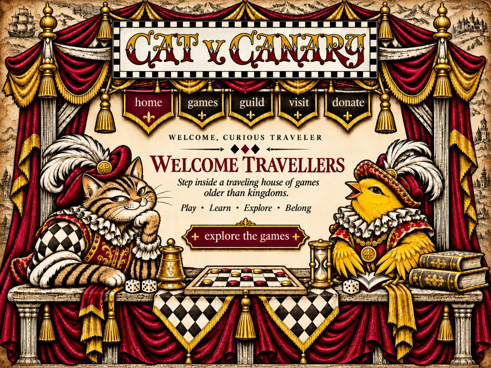
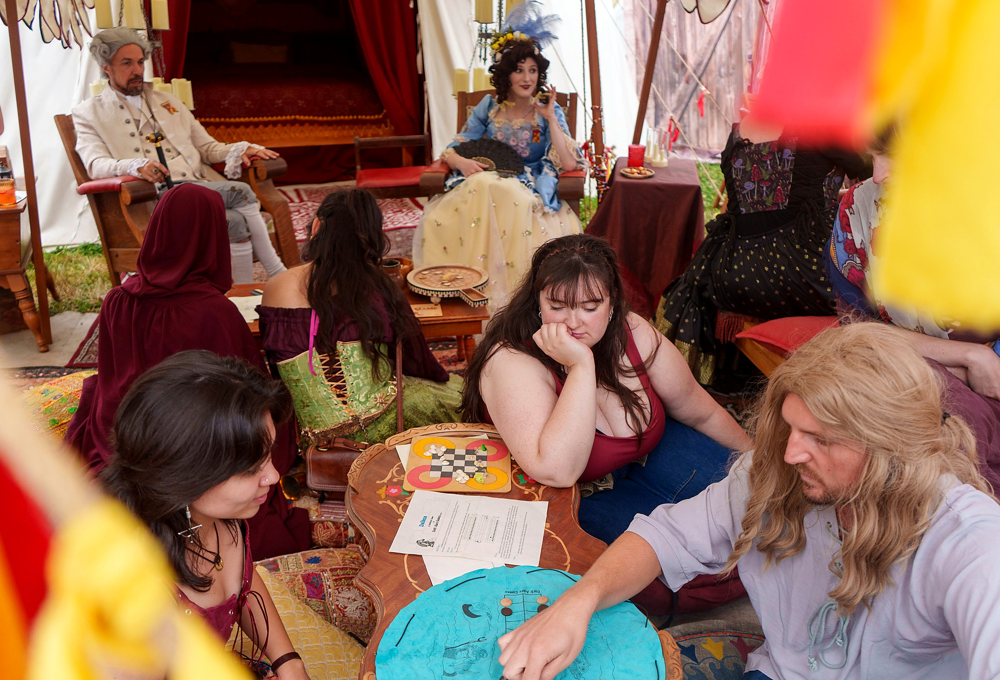

Play something ancient
Try Senet, the Royal Game of Ur, Xiangqi, Hnefatafl, and more. Learn what survives in the historical record and where modern reconstructions fill gaps.
Discover the games
A traveling game house where ancient history becomes something you can touch, question, and play. Come curious; leave with a story worth telling.
Thousands of years ago, people gathered over boards and pieces much as we do now: to compete, laugh, think, bargain, and spend time together. Cat v. Canary brings those moments back into reach. At our traveling game house, history starts with an invitation to sit down.
Our volunteers research and recreate historic games, then teach them in person at living-history events. No special knowledge is needed. The visitor is not merely watching an interpretation of everyday life—they are taking part in one.
Try Senet, the Royal Game of Ur, Xiangqi, Hnefatafl, and more. Learn what survives in the historical record and where modern reconstructions fill gaps.
Discover the gamesOur shaded encampment offers a shared focus, a comfortable chair when available, and conversation that begins naturally around a board.
More about hospitalityAn all-volunteer Foundation maintains teaching games, canvas pavilions, seating, costumes, transport, and the supplies needed to bring history to life.
Help the GuildA simple invitation can open a much larger world. A race game becomes a discussion of ancient trade and the movement of ideas. A strategy game becomes an exploration of decisions, chance, mathematics, and social customs. Visitors who have never handled an ancient-game reproduction can quickly become confident enough to explain a move to a friend.
We do not treat every reconstructed rule as a historical certainty. We tell people what archaeology and written sources show, what remains uncertain, and why the questions themselves matter. That makes the experience honest as well as entertaining.


Our Guild also looks after the people who make a faire work. Within event rules, we share meals, water, handwashing facilities, seating, and shade with other badged participants as practical capacity permits. For vendors working alone, volunteers may offer a brief cover service so someone can eat, hydrate, or take a necessary break.
These are modest acts, but they are important ones. An accessible place to learn, a quiet seat, a filled cup, or a few minutes of help can make a long day more manageable. We believe hospitality is part of cultural education: it turns an audience into a community.